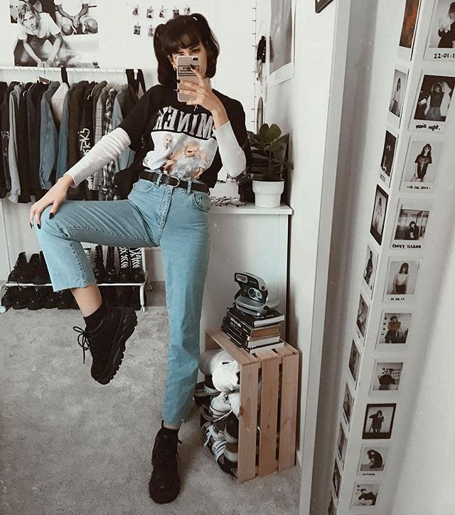
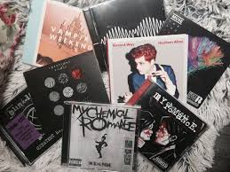
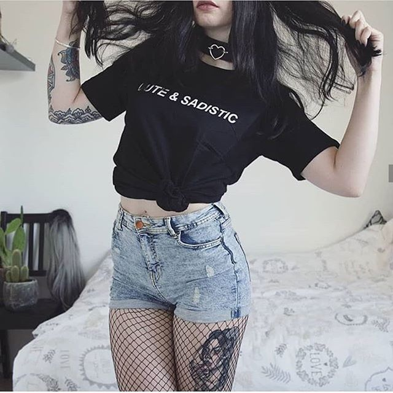
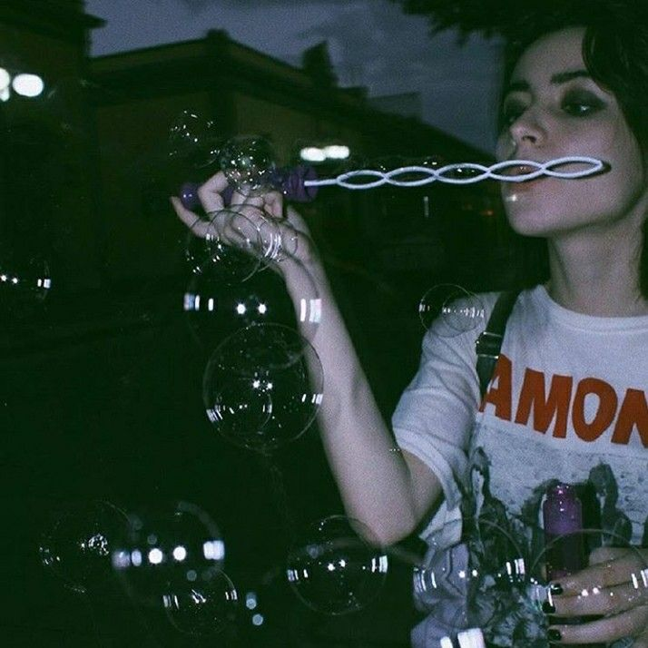

Grunge fashion emerged in the ’80s and reached peak popularity in the ’90s. The look and style were part of a broader subculture which was supported by the grunge music genre. All you need to do is channel your inner rebellious spirit and embrace the imperfect. Ripped jeans, metallic jackets, baggy shapes, and clashing designs are just the beginning of this attitude-heavy appearance.
Grunge fuses elements of punk rock and heavy metal.

Featuring the distorted electric guitar sound used in both genres, although some bands performed with more emphasis on one or the other. Like these genres, grunge typically uses electric guitar, bass guitar, drums and vocals.

Grunge clothing can be find in many stores including Hot Topic, Zumiez, Romwe, and other stores. Some people who follow the grunge aesthetic also go thrift shopping.
